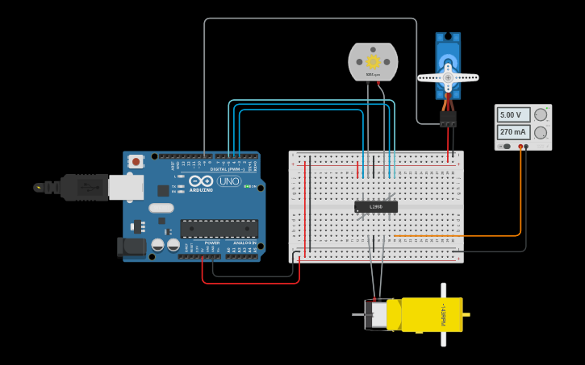
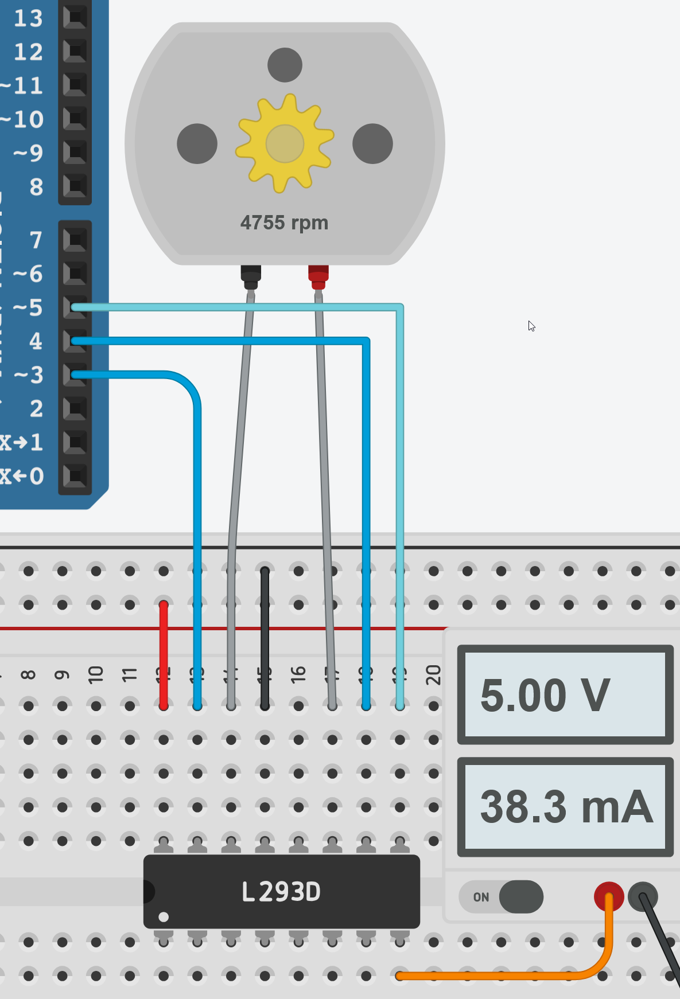

Motores
Enquanto os sensores trazem informações do mundo para o Arduino, os Atuadores (Saída) permitem que o projeto realize ações físicas. Nesta seção, veremos como controlar a velocidade e direção de um motor comum e a posição precisa de um servo motor.

1. Motor DC com Ponte H (L293D)
O motor DC é ideal para tração (rodas) e ventiladores. Para controlá-lo, usamos o CI L293D, que permite ao Arduino gerenciar a potência externa e inverter o sentido de rotação.
Conrole de Direção: Feito pelos pinos input.
Controle de Velocidade: Feito pelo pino enable usando PWM (analogWrite).
Ponte H (L293D) é indispensável porque o Arduino atua apenas como o “cérebro” do projeto, enviando sinais de baixa corrente (até 40mA) que são insuficientes para movimentar os “músculos” de um motor, que exige correntes muito mais altas. Além de fornecer essa potência extra através de uma fonte externa, a ponte H protege o microcontrolador contra picos de tensão reversa gerados pelo motor e permite o controle total de direção e velocidade via PWM, algo impossível de se fazer com segurança através de uma conexão direta.

Para conectar o motor com a Ponte H e o Arduino fazemos da seguinte forma:
| Pino Ponte H | Onde |
|---|---|
| VCC1/Power1 | 5V Arduino |
| VCC2/Power2 | Fonte Externa |
| Input 4 | Digital Pin Arduino |
| Output 4 | Motor 1 |
| GND | GND Arduino |
| Output 3 | Motor 1 |
| Input 3 | Digitial Pin Arduino |
| Enable 3/4 | PWM Pin Arduino |
| Input 1 | Digital Pin Arduino |
| Output 1 | Motor 1 |
| GND | GND Arduino |
| Output 2 | Motor 1 |
| Input 2 | Digitial Pin Arduino |
| Enable 1/2 | PWM Pin Arduino |
E lembre se de conectar o negativo da fonte externa o GND do arduino!
2. Servo Motor
O Servo Motor é um atuador de precisão que permite controlar o ângulo de seu eixo (geralmente de 0° a 180°). Diferente do motor DC, ele possui um circuito interno que mantém a posição desejada, sendo ideal para braços robóticos, lemes e travas.
/*******************************************************************************
* @file MotoresEServos.ino
* @brief Controle de Motor DC (L293D) e Servo Motor
* @author Prof. Emil Freme
* @adapted_from https://lastminuteengineers.com/l293d-dc-motor-arduino-tutorial/
* @license Creative Commons Atribuição 4.0 (CC BY)
*******************************************************************************/
#include <Servo.h>
// Pinos do Motor DC (Ponte H L293D)
const int in4 = 3; // Direção A
const int in3 = 4; // Direção B
const int en34 = 5; // Velocidade (PWM)
// Configuração do Servo
const int pinServo = 9;
Servo servo;
int pos = 0;
void setup() {
// Configura o servo e seus limites de pulso (500us a 2500us)
servo.attach(pinServo, 500, 2500);
pinMode(in4, OUTPUT);
pinMode(in3, OUTPUT);
pinMode(en34, OUTPUT);
}
void loop() {
// --- MOTOR DC: Teste de Direção e Velocidade ---
digitalWrite(in4, HIGH);
digitalWrite(in3, LOW); // Sentido Horário
analogWrite(en34, 255); // Velocidade Máxima
delay(1000);
analogWrite(en34, 128); // Reduz para Meia Velocidade
delay(1000);
digitalWrite(in4, LOW);
digitalWrite(in3, HIGH); // Inverte Sentido (Anti-horário)
analogWrite(en34, 255);
delay(1000);
digitalWrite(in3, LOW); // Para o motor DC
// --- SERVO MOTOR: Varredura de 0 a 180 graus ---
for (pos = 0; pos <= 180; pos += 1) {
servo.write(pos); // Move o servo para a posição 'pos'
delay(15); // Aguarda o movimento físico
}
for (pos = 180; pos >= 0; pos -= 1) {
servo.write(pos);
delay(15);
}
}